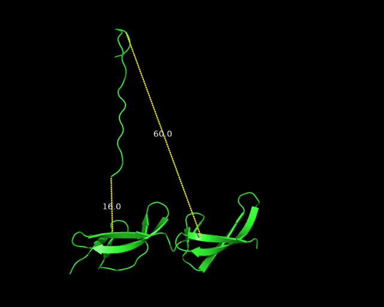

GLN534 <- c(7.539, 5.967, 4.696)
GLU145 <- c(7.261, 5.654, 4.777)
GLN534 - GLU145[1] 0.278 0.313 -0.081this tutorial is incomplete, edits will be made…
The aim of this guide is to use umbrella sampling to calculate the dissociation constant (Kd) for the interaction between 2F13F1 and FnBPA-1.
The methods are based on Exercise 3 in the tutorial guide by Justin Lemkul.
Create a new folder, then run the commands below to download two folders “gmx_tutorials_jpcb” and “toppar_c36_releases”.
git clone https://github.com/Lemkul-Lab/gmx_tutorials_jpcb.git
git clone https://github.com/Lemkul-Lab/toppar_c36_releases.gitGo into the gmx_tutorials_jpcb/inputs, and run this command to make a copy of the ‘03_chignolin’ folder and rename it to ‘04_FnBPA1’. This will be the working directory.
cp -r 03_chignolin/ 04_FnBPA1Move the charmm36-jul2024.ff folder to the 04_FnBPA1 folder. This forcefield then appears at number 1 on the list when you run pdb2gmx below.
Coordinates for the interaction between FnBPA1 and 2F1-3F1 are available here 2RKZ. There are five copies in the asymmetric unit. We will use Chain A (fibronectin) and M (FnBPA-1). The fibronectin molecule is complete, with no missing atoms. There are some missing atoms on the bacterial peptide. Open the structure in PyMOL and find residue Lys537 on Chain M. You should see that this resembles alanine. The side-chain of the Lys was not modelled because of disorder. It is necessary to rebuild these missing atoms. Click on the ‘Wizard’ menu to open the ‘Mutagenesis’ function. Pick the residue (Lys537 on Chain M), then on the menu at the bottom-right select ‘No mutation’, to bring up a list of amino acids. Choose ‘Lys’, then the words should change to ‘Mutate to Lys’, click ‘Apply’, then ‘Done’. Visually check that you have mutated this residue to lysine, then save the molecule in PDB format with the filename ‘2RKZ_model1.pdb’. Also, notice that the N-terminus of chain M is acetylated.
Open ‘2RKZ_model1.pdb’ in a text editor, delete everything except chains A and M. Save the file as ‘2RKZ_model2.pdb’
Note the FnBPA1 described in Schwarz-Linek (2003) is residues 560–577 LTG to YDS, this PDB file has a few additional amino acids.
In the 04_FnBPA folder, run pdb2gmx using the command below. This will add hydrogens and generate coordinate and topology files in GROMACS format. The option -ter allows us to manually specify the terminii on each polypeptide chain. This is required for the acetylated N-terminus on Chain M.
gmx pdb2gmx -f 2RKZ_model2.pdb -ignh -terThe program will look for forcefields in the current working directory that end with ‘.ff’. It should find the charmm36 forcefield from above, and this should be number 1 on the list.
Select 1 for charmm, the select 1 for the TIP3P water model.
Then we need to specify the start/end groups for each polypeptide chain.
Select start terminus type for GLU-63 0: NH3+
Select end terminus type for ILE-151 0: COO-
Select start terminus type for ACE-528 8: None
Select end terminus type for GLU-546 0: COO-
The output is “conf.gro”. You can check this in PyMOL. Check that the chemistry on the chain terminii is correct.
At the maximum extent, the distance between the two pull groups must be less than half the box size. Aiming for a 6 nm (60 Angstroms) pull, a 13 nm box size gives us a safety cushion.
This also centres the molecule with -c flag.
gmx editconf -f conf.gro -o box.gro -bt cubic -box 13 -cThe output should be something like below
No velocities found
system size : 3.543 4.035 5.341 (nm)
diameter : 6.165 (nm)
center : 0.368 -1.763 0.359 (nm)
box vectors : 5.959 10.972 7.147 (nm)
box angles : 90.00 96.94 90.00 (degrees)
box volume : 463.86 (nm^3)
shift : 6.132 8.263 6.141 (nm)
new center : 6.500 6.500 6.500 (nm)
new box vectors : 13.000 13.000 13.000 (nm)
new box angles : 90.00 90.00 90.00 (degrees)
new box volume :2197.00 (nm^3)The ITC was conducted at physiological salt strength, pH7.4, 25 °C. The files in this tutorial are already at 298 K (25 °C), so no changes are required here. The protonation is consistent with neutral pH. We can specify a NaCl concentration of 0.14 M with ‘-conc 0.14’ as below:
gmx solvate -cp box.gro -cs spc216.gro -p topol.top -o solv.gro
gmx grompp -f inputs/ions.mdp -c solv.gro -p topol.top -o ions.tpr
gmx genion -s ions.tpr -o solv_ions.gro -p topol.top -pname NA -nname CL -neutral -conc 0.14Choose 13 to replace the waters with NaCl
#minimise
gmx grompp -f inputs/minim.mdp -c solv_ions.gro -p topol.top -o em.tpr
gmx mdrun -nb gpu -deffnm em -v
#nvt equilibration (~3 minutes)
#this is only 100ps of equilibration, longer would be better.
gmx grompp -f inputs/nvt.mdp -c em.gro -r em.gro -p topol.top -o nvt.tpr
gmx mdrun -nb gpu -deffnm nvt -v
#npt equilibration (~17 minutes)
gmx grompp -f inputs/npt.mdp -c nvt.gro -t nvt.cpt -r nvt.gro -p topol.top -o npt.tpr
gmx mdrun -nb gpu -deffnm npt -vgmx energy -f npt.edr -o npt_pressure.xvg xmgrace npt_pressure.xvg gmx energy -f npt.edr -o npt_temperature.xvg xmgrace npt_temperature.xvg
Navigate into the inputs folder and open md.mdp. Change the number of steps as below. Then save the file with a new filename ‘md_1ns.mdp’
nsteps = 500000 ;1 nsBelow -f the mdp instruction file -c the input file -t Full precision trajectory input file (binary snapshot of the integrator state with positions, velocities, box, RNG/integrator state, elapsed time/step) -p the topology input file -o output trr file
gmx grompp -f inputs/md_1ns.mdp -c npt.gro -t npt.cpt -p topol.top -o md_1ns.tpr
gmx mdrun -v -deffnm md_1nsWe will pull the two molecules apart using a pair of atoms that are close together, therefore maximizing the pull distance. (EDIT - change this to choose a more central atom in the bacterial peptide)
gmx make_ndx -f md_1ns.gro -o index.ndx
r 145 & a CA
name 17 Glu145_CA
r 534 & a CA
name 18 Gln534_CAThis creates index.ndx
We need to calculate the vector between these. Gln534_CA - Glu145_CA
In the md_1ns.gro file, find the coordinates of these two CA atoms. 534GLN CA 1424 7.539 5.967 4.696 145GLU CA 1230 7.261 5.654 4.777
Perform a simple subtraction to find the vector.
[1] 0.278 0.313 -0.0810.278 0.313 -0.081
gmx distance -s md_1ns.tpr -f md_1ns.xtc -n index.ndx -select ‘com of group 17 plus com of group 18’ -oall -oh disthist.xvg -oxyz distxyz.xvg
The starting distance between the two CA atoms is 0.41 nm. The average distance here is 0.429 nm. There are no large deviations.
It is necessary to restrain the Fn protein to prevent rotation. In addition, the force generated from the pull may disrupt the structure of Fn.
Run the command below to see the itp files
ls -ltr *.itpWe need to restrain Chain A (fibronectin), defined by “topol_Protein_chain_A.itp”. Scroll to the end of this file and look for these lines:
; Include Position restraint file
#ifdef POSRES
#include "posre_Protein_chain_A.itp"
#endifChange the lines to this below:
; Include Position restraint file
#ifdef POSRES_Fn
#include "posre_Protein_chain_A.itp"
#endifThen add the -DPOSRES_Fn to the pull.mdp file. It is also necessary to adjust the scaling (as adding restraints with a variable box size may introduce artefacts).
define = -DPOSRES_Fn ;include position restraint on fibronectin
refcoord-scaling = all ; scale each atom's reference coordinates with the pressure-scaling matrixWe need to make some further changes to the pull.mdp file, specifying the two atoms that will be pulled (Glu145_CA and Gln534_CA) and the vector to define the direction. Edit the file so that it matches this below.
; Pull options
pull = yes
pull-ngroups = 2 ; total number of groups
pull-ncoords = 1 ;
pull-group1-name = Glu145_CA ; Fn
pull-group2-name = Gln534_CA ; Bacterial peptide
pull-coord1-type = umbrella
pull-coord1-geometry = direction
pull-coord1-vec = 0.278 0.313 -0.081
pull-coord1-dim = Y Y Y
pull-coord1-groups = 1 2
pull-coord1-start = yes
pull-coord1-rate = 0.005
pull-coord1-k = 2000The pull.mdp has a pull rate of 0.005 nm/ps, which currently over 500ps will extend the vector by 2.5 nm. We need to increase that.
At the maximum extent, the distance between the two pull groups must be less than half the box size (6.5 nm). If you exceed half the box length, it will result in a fatal error. If this happens reduce the pull distance accordingly. We need a margin of error to prevent interactions with neighboring molecules in adjacent cells.
We will use a 5.3 nm pull.
starting distance + pull distance = maximum extent 0.426 + 5.3 nm = 5.726 nm
As the pull rate is 0.005 nm/ps, we need to change the time of the simulation to 5.3/0.005 = 1060 ps. We do that by increasing the number of steps.
1060 ps is 1,060,000 fs
Each step is 2 fs, so 1,060,000/2 = 530000 steps
change this line in pull.mdp
nsteps = 530000 ; 1060 psThis takes ~36 minutes
gmx grompp -f inputs/pull.mdp -c md_1ns.gro -r md_1ns.gro -t md_1ns.cpt -n index.ndx -p topol.top -o pull.tpr
gmx mdrun -v -nb gpu -deffnm pullWhen you run the first command above, you will see these pull groups. Check the distances are as expected.
Pull group natoms pbc atom distance at start reference at t=0 1 1 0 2 1 0 0.426 nm 0.426 nm
Visualise this in PyMOL. Check it all looks sensible.
The command below also generates dist.xvg (needed later)
gmx distance -s pull.tpr -f pull.xtc -n index.ndx -select 'com of group 17 plus com of group 18' -oall -oh disthist.xvg -oxyz distxyz.xvg
#graph the distance over time
xmgrace dist.xvg
xmgrace -nxy dist.xvg -hdevice PNG -hardcopy -printfile pull_distance.png -noask
#graph the force over time
xmgrace pull_pullf.xvg
xmgrace -nxy pull_pullf.xvg -hdevice PNG -hardcopy -printfile pull_force.png -noaskFirst, edit the find_windows.py script to use a starting distance of 0.4 nm, ending distance of 6 nm in 0.2 nm increments. (to capture the distance of 6 nm, you may need to enter 6.2 as the maximum)
EDIT - this may need to be 0.1 nm
for d in numpy.arange(0.4, 6.2, 0.2):Then run the script with this command
python3 find_windows.pyThis python script reads the dist.xvg file from the previous step and extracts the .gro file that is closest to each target value. For example:
target value: 3.6 best value: 3.608 at time: 663.0Check that the first and last ones are as expected. If you are missing the last one at the greatest pull distance then increase the value above and repeat it.
Check the extent of the separation. Check at the maximum pull distance there are no interactions with neighboring molecules. On the image below, you can see the orientation at the maximum distance (6 nm). You can see that the pull vector was slightly to the left. Ideally, that vector should have been perpendicular to the axis of the 2F1-3F1 domains, this would then maximise the distance between any interacting atoms. The C-terminus of the FnBPA peptide remains relatively close to the fibnonectin, but at 0.16 nm, this should not be a problem.

Edit the template to define the pull groups, save it as ‘us.mdp’
gedit ./inputs/us.tmplCheck the lines below
nsteps = 5000000 ; 10 ns
pull-group1-name = Glu145_CA
pull-group2-name = Gln534_CA
pull-coord1-start = yes ; automatically set the starting distance for the bias potential
;pull-coord1-init = XX ; comment out this line, or delete it.Edit the ‘run_umbrella_sampling.sh’ script to stop it generating a new .mdp file for each distance. We will use the ‘us.mdp’ for all distances. (comment out lines 17-19, then specify us.mdp on line 22).
Edit the line at the top to define the number of runs for (( i=0; i<=24; i++ ))
The run_umbrella_sampling.sh script will generate the input files, then run npt/nvt equilibration with position restraints on the protein, then a 10 ns unrestrained md simulation in each window.
Then run the script
bash run_umbrella_sampling.shAn average of 8.7 hours per window.
First, edit line 7 in the ‘write_wham_files.py’ script to specify the number of files, in this case 28.
for i in range(0,28):Then run the script to generate the two .dat files.
python3 write_wham_files.pyThen run wham
gmx wham -it tpr-files.dat -if pullf-files.dat -bsprof -bsres -nBootstrap 200The output includes some warnings.
Warning, poor sampling bin 197 (z=3.36765). Check your histograms!
Warning, poor sampling bin 198 (z=3.38286). Check your histograms!
Warning, poor sampling bin 199 (z=3.39806). Check your histograms!
Initialized rapid wham stuff (contrib tolerance 3.57143e-08)
Evaluating only 1541 of 5600 expressions.
xmgrace -nxy histo.xvg
xmgrace profile.xvg
xmgrace bsResult.xvg plot the bootstrap graph to estimage the change in Gibbs free energy.
To calculate the Gibbs free energy change (ΔG) from a dissociation constant (Kd), use: \[
\Delta G = RT \ln(K_d)
\] Where:
R is the gas constant (8.314 J⋅K⁻¹⋅mol⁻¹)
T is the temperature (298 K)
\(K_d\) is the dissociation constant in moles per litre (\(0.5\,\mu\mathrm{M}\) is 5×10−7 M)
Now compare the Gibbs free energy from ITC to the one calculated above.